C/C++ 经过几十年的发展，积累了庞大的软件资产，他们很多已经久经考验而且性能足够优化。Go 语言要是可以站在 C/C++ 这个巨人的肩膀上，借助海量 C/C++ 软件资产，应用场景将会被无限扩展。

快速入门
我们从 hello world 开始，先看一个最简单的 CGO 程序，看一下 CGO 程序长什么样子。
1 | package main |
这里唯一需要注意的是，CGO 代码块和 import "C" 之间不能有空行。
自己编写 C 函数
我们自定义一个 SayHello() 函数，用于输出字符串：
1 | package main |
拆分 C 代码和 Go 代码
我们也可以将 C 代码放到单独的文件中，例如将下面的 hello.c 和 main.go 放到同一目录下：
1 |
|
1 | package main |
我们可以继续将代码重新组织拆分，拆分成 hello.h，hello.c 以及 main.go，我们继续来看：
1 | void SayHello(const char *s); |
1 |
|
1 | package main |
Go 语言实现 C 函数
在上面的例子中，我们将代码返回拆分，以达到模块化组织代码的目的，我们继续进行骚操作，我们将在 hello.h 中声明的函数，但是使用 Go 来实现这个 C 语言中约定的函数。
1 | void SayHello(const char *s); |
1 | package main |
1 | package main |
面向 C 接口的 Go 编程
我们通过 Go 代码实现 C 接口，使得 CGO 代码中 C 的比例逐渐下降，Go1.10 中增加了一个 _GoString_ 预定义的 C 语言类型，用来表示 Go 语言字符串。我们对上面的代码进行一次整合：
1 | // +build go1.10 |
CGO 基础
从一个简单的例子开始，我们认识了一个 CGO 程序是什么样子的，如何使用 CGO 编程。事实上，要使用 CGO 编程，需要在安装 C/C++ 工具链，在 MacOS 或者 linux 中需要安装 GCC，Windows 中则需要安装 MinGW 工具，同时需要设置 CGO_ENABLED=1，表示 CGO 处于启动状态。本地构建时，CGO 默认是启用的，但是在交叉编译时是默认禁止的。如果需要跨平台 CGO 编译，需要自行设置编译工具，但是这样比较麻烦，所以 github 上有一款跨平台 Golang CGO 编译工具：https://github.com/karalabe/xgo。
import "C"
如果代码中出现 import "C" 语句则表示启用了 CGO 特性，紧邻这行语句前面的注释是一种特殊语法，里面包含正常的 C 语言代码，确保 CGO 弃用的情况下， 还可以在当前目录中包含 C/C++ 代码。C 的相关的头文件被包含之后，所有的 C 语言元素都会出现在虚拟的包 “C” 中，需要注意的是 import "C" 这个语句需要需要独占一行，不能和其他的 import 语句写在一起。
因为 C 和 Go 都是强类型语言，所以在 CGO 中传递的参数类型必须和声明的类型完全一致，而且，传递前必须使用 “C” 中的转换函数转换成对应的 C 类型，不能直接传入 Go 中类型的变量。
同时通过虚拟 C 包导入的语言符号不需要以大写字母开头，不受 Go 语言导出规则约束。
CGO 将当前引用的C语言符号都放到了虚拟的 C 包中，同时当前包依赖的其他 Go 语言包内部也可能通过 CGO 引入了相似的虚拟 C 包，但是不同的 Go 语言包引入的虚拟 C 包之间的符号是不能通用的。例如下面这段代码就是不能运行的：
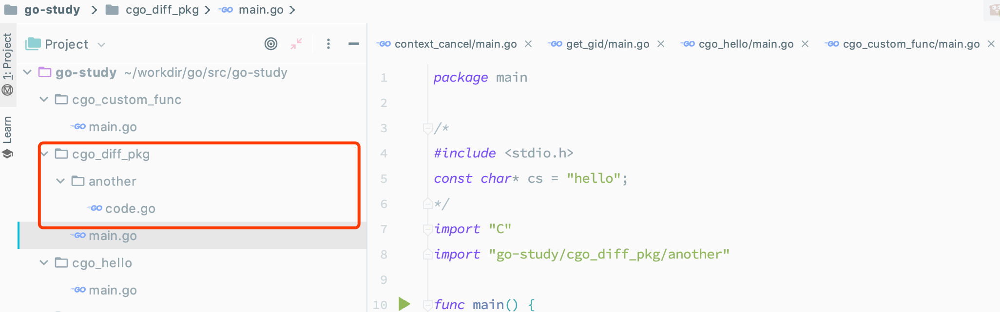
1 | package another |
1 | package main |
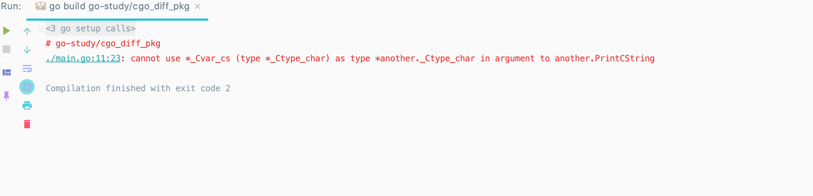
#cgo 语句
在 import "C" 语句前的注释中可以通过 #cgo 设置编一阶段和链接阶段的参数，编译阶段的参数主要用于定义相关宏和指定头文件检索路径。链接阶段的参数只要是指定库库文件检索路径和要链接的库文件。
1 | // #cgo CFLAGS: -DPNG_DEBUG=1 -I./include |
上面的代码中， CFLAGS 定义了宏 PNG_DEBUG值为 1；-I 定义了头文件包含的检索目录。LDFLAGS 部分的 -L 指定了链接时库文件检索目录，-l 指定了链接时需要链接 png 库。
由于 C/C++ 遗留问题，C 头文件检索目录可以是相对路径，但是库文件检索目录必须是绝对路径，在库文件的检索目录中可以通过 ${SRCDIR} 变量表示当前包目录的绝对路径：
// #cgo LDFLAGS: -L${SRCDIR}/libs -lfoo
上面的代码将在链接时被展开为：
// #cgo LDFLAGS: -L/go/src/foo/libs -lfoo
#cgo 也支持条件选择，当满足某个 CPU 架构或者系统类型时，后面的编译选项才会生效，例如下面的针对 Windows 和非 Windows 的编译和链接选项：
// #cgo windows CFLAGS: -Dx86=1
// #cgo !windows LDFLAGS: -lm
如果在不同的系统下，CGO 对应着不同的 C 代码，那么我们可以先使用 #cgo 定义不同的 C 语言宏，然后通过不同的宏来区分不同的代码：
1 | package main |
build 条件编译
关于条件编译的详情可以在这篇文章中了解更多：https://studygolang.com/articles/154，官方的描述是在这里：https://golang.org/pkg/go/build/。
build 标志是在 Go 或者 CGO 环境下的 C/C++ 文件开头的一种特殊的注释。条件编译类似于前面通过 #cgo 在不同平台定义的宏，只有在对应平台的宏被定义后才会编译相应的代码。但是通过 #cgo 语句定义宏有两个限制，即它只能是基于 Go 语言支持的 Windows、Darwin 和 Linux 等已经支持的文件系统，如果希望定义一个 DEBUG 标志的宏，#cgo 语句就无能为力了。而 Go 语言提供的 build 标志条件编译则容易做到。例如，下面的源文件只有在设置 debug 构建标志是才会被构建，我们来看这样一个例子：
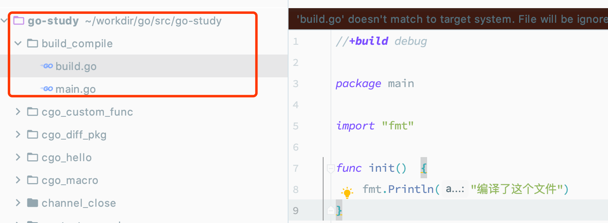
1 | //+build debug |
1 | package main |
当 build 有多个标志时，可以通过逻辑操作的规则来组合使用多个标志。例如，以下构建只有在 “Linux/386” 或 “Darwin 平台费 CGO 环境” 才进行构建：
// +build linux,386 darwin,!cgo
其中，linux 和 386 是通过 , 分隔表示与，linux,386 和 darwin,!cgo 通过 分隔表示或。
类型转换
最初 CGO 事务IE了达到方便从 Go 语言函数调用 C 语言函数（用 C 语言实现 Go 语言函数），以复用 C 语言资源这一目的而出现的（因为 C 语言还会涉及回调函数，自然也会涉及从 C 语言函数调用 Go 语言函数（Go 实现 C 语言函数））。现在，它已经演变为 C 语言和 Go 语言双通信的桥梁。要想利用好 CGO 特性，字眼需要了解两种语言类型之间的转换规则。
数值类型
在 Go 语言中访问 C 语言类型符号时，一般是通过虚拟的 “C” 包访问的，例如 C.int 对应 C语言的 int 类型，有些 C 语言类型由多个关键字组成，但通过虚拟的 “C” 包访问C语言类型时名称部分不能为存在空格，例如 unsigned int 不能通过 C.unsigned int 访问。因此 CGO 为 C 语言基础类型提供了相对应转换规则，例如 C.uint 对应 C 语言的 unsigned int。
需要注意的是，虽然在 C 语言中 int，short 等类型没有明确定义内存大小，但是在 CGO 中他们的内存大小是确定的。在 CGO 中，C 语言的 int 和 long类型都是对应 4 字节内存大小，size_t 类型可以当做 Go 语言 uint 无符号整形类型对待。
| C语言类型 | CGO类型 | Go语言类型 |
|---|---|---|
| char | C.char | byte |
| singed char | C.schar | int8 |
| unsigned char | C.uchar | uint8 |
| short | C.short | int16 |
| unsigned short | C.ushort uint16 | |
| int | C.int | int32 |
| unsigned int | C.uint | uint32 |
| long | C.long | int32 |
| unsigned long | C.ulong | uint32 |
| long long int | C.longlong | int64 |
| unsigned long long int | C.ulonglong | uint64 |
| float | C.float | float32 |
| double | C.double | float64 |
| size_t | C.size_t | uint |
需要注意的是，虽然在 C 语言中 int、short 等类型没有明确定义内存大小，但是在 CGO 中它们的内存大小是确定的。在cCGO 中，C语言的int 和 long 类型都是对应4个字节的内存大小，size_t 类型可以当作Go语言uint无符号整数类型对待。
CGO中，虽然C语言的int固定为4字节的大小，但是Go语言自己的int 和 uint 却在32位和64位系统下分别对应4个字节和8个字节大小。如果需要在C语言中访问Go语言的int类型，可以通过 GoInt 类型访问，GoInt 类型在CGO工具生成的 _cgo_export.h 头文件中定义。其实在 _cgo_export.h头文件中，每个基本的Go数值类型都定义了对应的C语言类型，它们一般都是以单词Go为前缀。下面是64位环境下，_cgo_export.h头文件生成的Go数值类型的定义，其中GoInt和 GoUint 类型分别对应 GoInt64 和 GoUint64。下面是 _cgo_export.h 文件的内容：
1 | /* Code generated by cmd/cgo; DO NOT EDIT. */ |
除了 GoInt 和 GoUint 之外，我们并不推荐直接访问 GoInt32、GoInt64 等类型。更好的做法是通过C语言的C99标准引入的<stdint.h>头文件。为了提高C语言的可移植性，在 <stdint.h> 文件中，不但每个数值类型都提供了明确内存大小，而且和Go语言的类型命名更加一致。Go语言类型<stdint.h> 头文件类型对比如下表示。
| C语言类型 | CGO类型 | Go语言类型 |
|---|---|---|
| int8_t | C.int8_t | int8 |
| uint8_t | C.uint8_t | uint8 |
| int16_t | C.int16_t | int16 |
| uint16_t | C.uint16_t | uint16 |
| int32_t | C.int32_t | int32 |
| uint32_t | C.uint32_t | uint32 |
| int64_t | C.int64_t | int64 |
| uint64_t | C.uint64_t | uint64 |
前文说过，如果C语言的类型是由多个关键字组成，则无法通过虚拟的“C”包直接访问(比如C语言的unsigned short不能直接通过C.unsigned short访问)。但是，在 <stdint.h> 中通过使用C语言的typedef关键字将unsigned short重新定义为uint16_t这样一个单词的类型后，我们就可以通过C.uint16_t访问原来的unsigned short类型了。对于比较复杂的C语言类型，推荐使用typedef关键字提供一个规则的类型命名，这样更利于在CGO中访问。
字符串切片
在CGO生成的 _cgo_export.h 头文件中还会为Go语言的字符串、切片、字典、接口和管道等特有的数据类型生成对应的C语言类型：
1 | typedef struct { const char *p; GoInt n; } GoString; |
不过需要注意的是，其中只有字符串和切片在CGO中有一定的使用价值，因为CGO为他们的某些GO语言版本的操作函数生成了C语言版本，因此二者可以在Go调用C语言函数时马上使用;而CGO并未针对其他的类型提供相关的辅助函数，且Go语言特有的内存模型导致我们无法保持这些由Go语言管理的内存指针，所以它们C语言环境并无使用的价值。
在导出的C语言函数中我们可以直接使用Go字符串和切片。假设有以下两个导出函数：
1 | //export helloString |
CGO生成的_cgo_export.h头文件会包含以下的函数声明：
1 | extern void helloString(GoString p0); |
不过需要注意的是，如果使用了GoString类型则会对_cgo_export.h头文件产生依赖，而这个头文件是动态输出的。
Go1.10针对Go字符串增加了一个_GoString_预定义类型，可以降低在cgo代码中可能对_cgo_export.h头文件产生的循环依赖的风险。我们可以调整helloString函数的C语言声明为：
extern void helloString(GoString p0);
因为 _GoString_ 是预定义类型，我们无法通过此类型直接访问字符串的长度和指针等信息。Go1.10同时也增加了以下两个函数用于获取字符串结构中的长度和指针信息：
1 | size_t _GoStringLen(_GoString_ s); |
更严谨的做法是为C语言函数接口定义严格的头文件，然后基于稳定的头文件实现代码。
结构体，联合以及枚举类型
C语言的结构体、联合、枚举类型不能作为匿名成员被嵌入到Go语言的结构体中。在Go语言中，我们可以通过 C.struct_xxx 来访问C语言中定义的 struct_xxx 结构体类型。结构体的内存布局按照C语言的通用对齐规则，在32位Go语言环境C语言结构体也按照32位对齐规则，在64位Go语言环境按照64位的对齐规则。对于指定了特殊对齐规则的结构体，无法在CGO中访问
1 | package main |
如果结构体的成员名字中碰巧是Go语言的关键字，可以通过在成员名开头添加下划线来访问，如上述代码。但是如果有2个成员：一个是以Go语言关键字命名，另一个刚好是以下划线和Go语言关键字命名，那么以Go语言关键字命名的成员将会以双下划线开始：
1 | package main |
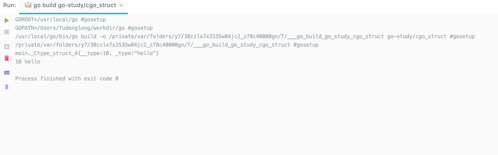
C语言结构体中位字段对应的成员无法在Go语言中访问，如果需要操作位字段成员，需要通过在C语言中定义辅助函数来完成。对应零长数组的成员，也无法在Go语言中直接访问数组的元素：
1 | /* |
在C语言中，我们无法直接访问Go语言定义的结构体类型。
对于联合类型，我们可以通过C.union_xxx来访问C语言中定义的union xxx类型。但是Go语言中并不支持C语言联合类型，它们会被转为对应大小的字节数组。
1 | package main |
如果需要操作C语言的联合类型变量，一般有三种方法：第一种是在C语言中定义辅助函数；第二种是通过Go语言的”encoding/binary”手工解码成员(需要注意大端小端问题)；第三种是使用unsafe包强制转型为对应类型(这是性能最好的方式)。下面展示通过unsafe包访问联合类型成员的方式：
1 | package main |
虽然unsafe包访问最简单、性能也最好，但是对于有嵌套联合类型的情况处理会导致问题复杂化。对于复杂的联合类型，推荐通过在C语言中定义辅助函数的方式处理。
对于枚举类型，我们可以通过C.enum_xxx来访问C语言中定义的enum xxx结构体类型。
1 | package main |
在C语言中，枚举类型底层对应int类型，支持负数类型的值。我们可以通过C.ONE、C.TWO等直接访问定义的枚举值。
数组、字符串和切片
在C语言中，数组名其实对应于一个指针，指向特定类型特定长度的一段内存，但是这个指针不能被修改；当把数组名传递给一个函数时，实际上传递的是数组第一个元素的地址。为了讨论方便，我们将一段特定长度的内存统称为数组。C语言的字符串是一个char类型的数组，字符串的长度需要根据表示结尾的NULL字符的位置确定。C语言中没有切片类型。
在Go语言中，数组是一种值类型，而且数组的长度是数组类型的一个部分。Go语言字符串对应一段长度确定的只读byte类型的内存。Go语言的切片则是一个简化版的动态数组。
Go语言和C语言的数组、字符串和切片之间的相互转换可以简化为Go语言的切片和C语言中指向一定长度内存的指针之间的转换。
CGO的C虚拟包提供了以下一组函数，用于Go语言和C语言之间数组和字符串的双向转换：
1 | // Go string to C string |
其中C.CString针对输入的Go字符串，克隆一个C语言格式的字符串；返回的字符串由 C 语言的 malloc 函数分配，不使用时需要通过 C 语言的 free 函数释放。C.CBytes 函数的功能和 C.CString 类似，用于从输入的 Go 语言字节切片克隆一个C语言版本的字节数组，同样返回的数组需要在合适的时候释放。C.GoString 用于将从 NULL结尾的 C 语言字符串克隆一个 Go 语言字符串。C.GoStringN 是另一个字符数组克隆函数。C.GoBytes 用于从 C 语言数组，克隆一个 Go 语言字节切片。
该组辅助函数都是以克隆的方式运行。当 Go 语言字符串和切片向 C 语言转换时，克隆的内存由 C 语言的 malloc 函数分配，最终可以通过 free 函数释放。当 C 语言字符串或数组向 Go 语言转换时，克隆的内存由 Go 语言分配管理。通过该组转换函数，转换前和转换后的内存依然在各自的语言环境中，它们并没有跨越 Go 语言和 C 语言。克隆方式实现转换的优点是接口和内存管理都很简单，缺点是克隆需要分配新的内存和复制操作都会导致额外的开销。
在 reflect 包中有字符串和切片的定义：
1 | type StringHeader struct { |
如果不希望单独分配内存，可以在Go语言中直接访问C语言的内存空间：
1 | package main |
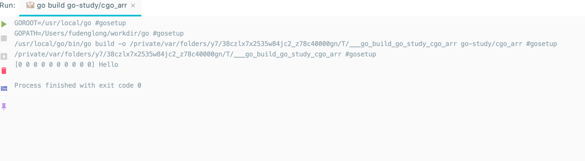
因为Go语言的字符串是只读的，用户需要自己保证Go字符串在使用期间，底层对应的C字符串内容不会发生变化、内存不会被提前释放掉。
在CGO中，会为字符串和切片生成和上面结构对应的C语言版本的结构体：
1 | typedef struct { const char *p; GoInt n; } GoString; |
在C语言中可以通过GoString和GoSlice来访问Go语言的字符串和切片。如果是Go语言中数组类型，可以将数组转为切片后再行转换。如果字符串或切片对应的底层内存空间由Go语言的运行时管理，那么在C语言中不能长时间保存Go内存对象。
指针间的转换
在 C 语言中，不同类型的指针是可以显式或隐式转换的，如果是隐式只是会在编译时给出一些警告信息。但是Go语言对于不同类型的转换非常严格，任何 C 语言中可能出现的警告信息在Go语言中都可能是错误！指针是 C 语言的灵魂，指针间的自由转换也是 cgo 代码中经常要解决的第一个重要的问题。
在 Go 语言中两个指针的类型完全一致则不需要转换可以直接通用。如果一个指针类型是用 type 命令在另一个指针类型基础之上构建的，换言之两个指针底层是相同完全结构的指针，那么我我们可以通过直接强制转换语法进行指针间的转换。但是 cgo 经常要面对的是2个完全不同类型的指针间的转换，原则上这种操作在纯 Go 语言代码是严格禁止的。
cgo 存在的一个目的就是打破 Go 语言的禁止，恢复 C 语言应有的指针的自由转换和指针运算。以下代码演示了如何将X类型的指针转化为Y类型的指针：
1 | var p *X |
为了实现 X 类型指针到 Y 类型指针的转换，我们需要借助 unsafe.Pointer 作为中间桥接类型实现不同类型指针之间的转换。unsafe.Pointer 指针类型类似 C 语言中的 void* 类型的指针。
下面是指针间的转换流程的示意图：
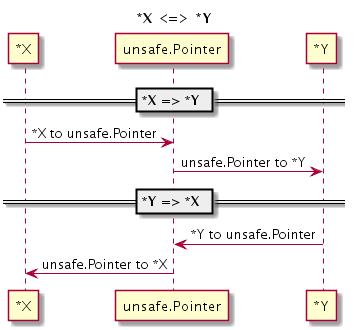
任何类型的指针都可以通过强制转换为 unsafe.Pointer 指针类型去掉原有的类型信息，然后再重新赋予新的指针类型而达到指针间的转换的目的。
数值和指针的转换
不同类型指针间的转换看似复杂，但是在 cgo 中已经算是比较简单的了。在 C 语言中经常遇到用普通数值表示指针的场景，也就是说如何实现数值和指针的转换也是 cgo 需要面对的一个问题。
为了严格控制指针的使用，Go 语言禁止将数值类型直接转为指针类型！不过，Go语言针对 unsafe.Pointr 指针类型特别定义了一个 uintptr 类型。我们可以 uintptr 为中介，实现数值类型到 unsafe.Pointr 指针类型到转换。再结合前面提到的方法，就可以实现数值和指针的转换了。
下面流程图演示了如何实现 int32 类型到 C 语言的 char* 字符串指针类型的相互转换：
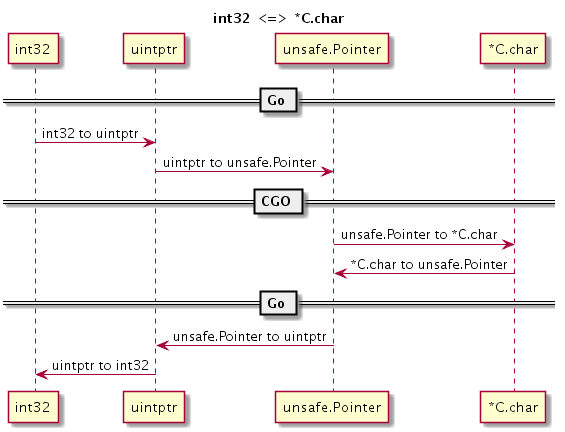
1 | package main |
转换分为几个阶段，在每个阶段实现一个小目标：首先是 int32 到 uintptr 类型，然后是 uintptr 到 unsafe.Pointer 指针类型，最后是unsafe.Pointer 指针类型到 *C.char 类型。
切片间的转换
在 C 语言中数组也一种指针，因此两个不同类型数组之间的转换和指针间转换基本类似。但是在 Go 语言中，数组或数组对应的切片都不再是指针类型，因此我们也就无法直接实现不同类型的切片之间的转换。
不过 Go 语言的 reflect 包提供了切片类型的底层结构，再结合前面讨论到不同类型之间的指针转换技术就可以实现 []X 和 []Y 类型的切片转换，举个例子：
1 | package main |
但是这种转换理论上可以，实际操作的时候，要看输入的类型和要转换的目标类型，要不然转换没有意义。
函数调用
函数是 C 语言编程的核心，通过 CGO 技术我们不仅仅可以在 Go 语言中调用 C 语言函数，也可以将 Go 语言函数导出为 C 语言函数。
Go调用C函数
对于一个启用 CGO 特性的程序，CGO 会构造一个虚拟的 C 包。通过这个虚拟的 C 包可以调用 C 语言函数。
1 | package main |
以上的 CGO 代码首先定义了一个当前文件内可见的 add 函数，然后通过 C.add。
C函数的返回值
对于有返回值的 C 函数，我们可以正常获取返回值。
1 | package main |
上面的 div 函数实现了一个整数除法的运算，然后通过返回值返回除法的结果。
不过对于除数为 0 的情形并没有做特殊处理。如果希望在除数为 0 的时候返回一个错误，其他时候返回正常的结果。因为 C 语言不支持返回多个结果，因此 <errno.h> 标准库提供了一个 errno 宏用于返回错误状态。我们可以近似地将 errno 看成一个线程安全的全局变量，可以用于记录最近一次错误的状态码。
CGO 也针对 <errno.h> 标准库的 errno 宏做的特殊支持，在 CGO 调用 C 函数时如果有两个返回值，那么第二个返回值将对应 errno 错误状态。改进后的div函数实现如下：
1 | package main |
这个程序将输出：
2 <nil>
0 invalid argument
我们可以近似地将div函数看作为以下类型的函数：
func C.div(a, b C.int) (C.int, [error])
第二个返回值是可忽略的 error 接口类型，底层对应 syscall.Errno 错误类型。
void函数的返回值
C 语言函数还有一种没有返回值类型的函数，用 void 表示返回值类型。一般情况下，我们无法获取 void 类型函数的返回值，因为没有返回值可以获取。前面的例子中提到，cgo 对 errno 做了特殊处理，可以通过第二个返回值来获取 C 语言的错误状态。对于 void 类型函数，这个特性依然有效。
1 | package main |
这段程序将输出：
<nil>
此时，我们忽略了第一个返回值，只获取第二个返回值对应的错误码。我们也可以尝试获取第一个返回值，它对应的是 C 语言的 void 对应的 Go 语言类型：
1 | package main |
这个函数将输出：
[] main._Ctype_void <nil>
其实在 CGO 生成的代码中，_Ctype_void 类型对应一个0长的数组类型 [0]byte ，因此 fmt.Println 输出的是一个表示空数值的方括弧。
内部机制
对于刚刚接触 CGO 用户来说，CGO 的很多特性类似魔法。CGO 特性主要是通过一个叫 cgo 的命令行工具来辅助输出 Go 和 C 之间的桥接代码。本节我们尝试从生成的代码分析 Go 语言和 C 语言函数直接相互调用的流程。
CGO生成的中间文件
要了解 CGO 技术的底层秘密首先需要了解 CGO 生成了哪些中间文件。我们可以在构建一个 cgo 包时增加一个 -work 输出中间生成文件所在的目录并且在构建完成时保留中间文件。如果是比较简单的cgo代码我们也可以直接通过手工调用go tool cgo命令来查看生成的中间文件。
在一个 Go 源文件中，如果出现了 import "C" 指令则表示将调用 cgo 命令生成对应的中间文件。下图是 cgo 生成的中间文件的简单示意图：
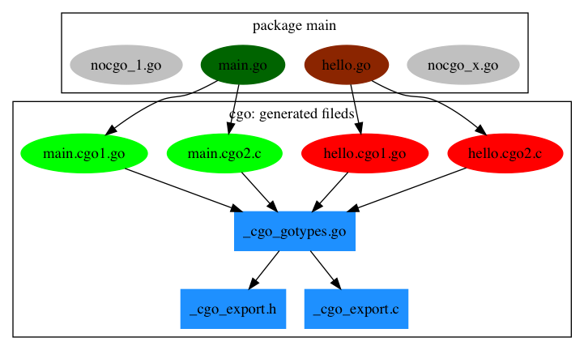
包中有 4 个 Go 文件，其中 nocgo 开头的文件中没有 import "C" 指令，其它的 2 个文件则包含了 cgo 代码。cgo 命令会为每个包含了 cgo 代码的 Go 文件创建 2 个中间文件，比如 main.go 会分别创建 main.cgo1.go 和 main.cgo2.c 两个中间文件。然后会为整个包创建一个 _cgo_gotypes.go Go 文件，其中包含Go语言部分辅助代码。此外还会创建一个 _cgo_export.h 和 _cgo_export.c 文件，对应 Go 语言导出到C语言的类型和函数。
Go 调用 C 函数
Go调用C函数是CGO最常见的应用场景，我们将从最简单的例子入手分析Go调用C函数的详细流程。
具体代码如下（main.go）：
1 | package main |
首先构建并运行该例子没有错误。然后通过cgo命令行工具在_obj目录生成中间文件：
go tool cgo main.go
查看 _obj 目录生成中间文件：
$ ls _obj | awk '{print $NF}'
_cgo_.o
_cgo_export.c
_cgo_export.h
_cgo_flags
_cgo_gotypes.go
_cgo_main.c
main.cgo1.go
main.cgo2.c
其中 _cgo_.o 、 _cgo_flags 和 _cgo_main.c 文件和我们的代码没有直接的逻辑关联，可以暂时忽略。我们先查看 main.cgo1.go 文件，它是 main.go 文件展开虚拟C包相关函数和变量后的Go代码：
1 | package main |
其中 C.sum(1, 1) 函数调用被替换成了 (_Cfunc_sum)(1, 1) 。每一个 C.xxx 形式的函数都会被替换为 _Cfunc_xxx 格式的纯 Go 函数，其中前缀 _Cfunc_ 表示这是一个C函数，对应一个私有的Go桥接函数。_Cfunc_sum 函数在cgo生成的 _cgo_gotypes.go 文件中定义：
1 | //go:cgo_unsafe_args |
其中 _cgo_runtime_cgocall 对应 runtime.cgocall 函数，函数的声明如下：
func runtime.cgocall(fn, arg unsafe.Pointer) int32
第一个参数是C语言函数的地址，第二个参数是存放C语言函数对应的参数结构体的地址。在这个例子中，被传入 C 语言函数 _cgo_506f45f9fa85_Cfunc_sum 也是 cgo 生成的中间函数。函数在 main.cgo2.c 定义：
1 | void _cgo_506f45f9fa85_Cfunc_sum(void *v) { |
这个函数参数只有一个void范型的指针，函数没有返回值。真实的sum函数的函数参数和返回值均通过唯一的参数指针类实现,_cgo_506f45f9fa85_Cfunc_sum 函数的指针指向的结构为：
1 | struct { |
其中 p0 成员对应 sum 的第一个参数，p1 成员对应 sum 的第二个参数，r成员，__pad12 用于填充结构体保证对齐 CPU 机器字的整倍数。然后从参数指向的结构体获取调用参数后开始调用真实的C语言版sum函数，并且将返回值保持到结构体内返回值对应的成员。因为 Go 语言和 C 语言有着不同的内存模型和函数调用规范。其中 _cgo_topofstack 函数相关的代码用于 C 函数调用后恢复调用栈。_cgo_tsan_acquire 和 _cgo_tsan_release 则是用于扫描CGO 相关的函数则是对 CGO 相关函数的指针做相关检查。
C.sum的整个调用流程图如下：
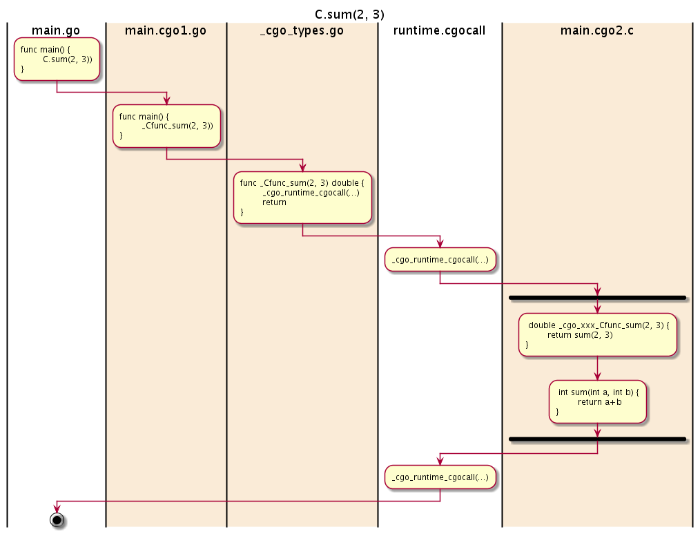
其中 runtime.cgocall 函数是实现 Go 语言到 C 语言函数跨界调用的关键。更详细的细节可以参考 https://golang.org/src/cmd/cgo/doc.go 内部的代码注释和 runtime.cgocall 函数的实现。
C 调用 Go 函数
在简单分析了 Go 调用 C 函数的流程后，我们现在来分析 C 反向调用 Go 函数的流程。同样，我们现构造一个 Go 语言版本的 sum 函数，文件名同样为main.go：
1 | package main |
CGO的语法细节不在赘述。为了在C语言中使用sum函数，我们需要将 Go 代码编译为一个 C 静态库：
go build -buildmode=c-archive -o sum.a main.go
如果没有错误的话，以上编译命令将生成一个 sum.a 静态库和 sum.h 头文件。其中 sum.h 头文件将包含 sum 函数的声明，静态库中将包含 sum 函数的实现。要分析生成的C语言版 sum 函数的调用流程，同样需要分析 cgo 生成的中间文件：
go tool cgo main.go
_obj目录还是生成类似的中间文件。为了查看方便，我们刻意忽略了无关的几个文件：
$ ls _obj | awk '{print $NF}'
_cgo_export.c
_cgo_export.h
_cgo_gotypes.go
main.cgo1.go
main.cgo2.c
其中 _cgo_export.h 文件的内容和生成C静态库时产生的 sum.h 头文件是同一个文件，里面同样包含 sum 函数的声明。既然 C 语言是主调用者，我们需要先从 C 语言版 sum 函数的实现开始分析。C 语言版本的 sum 函数在生成的 _cgo_export.c 文件中（该文件包含的是 Go 语言导出函数对应的C语言函数实现）：
1 | int sum(int p0, int p1) |
sum函数的内容采用和前面类似的技术，将 sum 函数的参数和返回值打包到一个结构体中，然后通过 runtime/cgo.crosscall2 函数将结构体传给_cgoexp_8313eaf44386_sum 函数执行。runtime/cgo.crosscall2 函数采用汇编语言实现，它对应的函数声明如下：
1 | func runtime/cgo.crosscall2( |
其中关键的是 fn 和 a ，fn 是中间代理函数的指针，a 是对应调用参数和返回值的结构体指针。中间的 _cgoexp_8313eaf44386_sum 代理函数在_cgo_gotypes.go 文件：
1 | func _cgoexp_8313eaf44386_sum(a unsafe.Pointer, n int32, ctxt uintptr) { |
内部将 sum 的包装函数 _cgoexpwrap_8313eaf44386_sum 作为函数指针，然后由 _cgo_runtime_cgocallback 函数完成 C 语言到 Go 函数的回调工作。_cgo_runtime_cgocallback 函数对应 runtime.cgocallback 函数，函数的类型如下：
func runtime.cgocallback(fn, frame unsafe.Pointer, framesize, ctxt uintptr)
参数分别是函数指针，函数参数和返回值对应结构体的指针，函数调用帧大小和上下文参数。
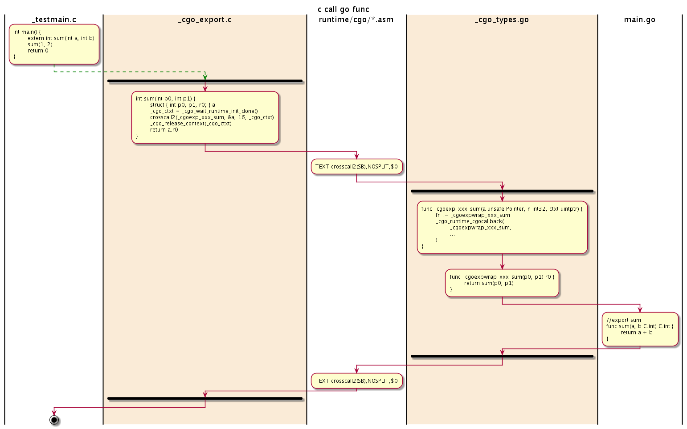
其中 runtime.cgocallback 函数是实现 C 语言到 Go 语言函数跨界调用的关键。更详细的细节可以参考相关函数的实现。
封装 qsort
qsort 快速排序函数是 C 语言的高阶函数，支持用于自定义排序比较函数，可以对任意类型的数组进行排序。
认识 qsort 函数
qsort快速排序函数有 <stdlib.h> 标准库提供，函数的声明如下：
1 | void qsort( |
其中 base 参数是要排序数组的首个元素的地址，num 是数组中元素的个数，size 是数组中每个元素的大小。最关键是 cmp 比较函数，用于对数组中任意两个元素进行排序。cmp 排序函数的两个指针参数分别是要比较的两个元素的地址，如果第一个参数对应元素大于第二个参数对应的元素将返回结果大于 0，如果两个元素相等则返回 0，如果第一个元素小于第二个元素则返回结果小于 0。
1 |
|
其中 DIM(values) 宏用于计算数组元素的个数，sizeof(values[0]) 用于计算数组元素的大小。 cmp 是用于排序时比较两个元素大小的回调函数。为了避免对全局名字空间的污染，我们将 cmp 回调函数定义为仅当前文件内可访问的静态函数。
将 qsort 函数从 Go 包导出
为了方便 Go 语言的非 CGO 用户使用 qsort 函数，我们需要将C语言的 qsort 函数包装为一个外部可以访问的 Go 函数。用Go语言将qsort函数重新包装为qsort.Sort函数：
1 | package qsort |
因为Go语言的CGO语言不好直接表达C语言的函数类型，因此在C语言空间将比较函数类型重新定义为一个 qsort_cmp_func_t 类型。
虽然 Sort 函数已经导出了，但是对于 qsort 包之外的用户依然不能直接使用该函数—— Sort 函数的参数还包含了虚拟的 C 包提供的类型。 在 CGO 的内部机制一节中我们已经提过，虚拟的 C 包下的任何名称其实都会被映射为包内的私有名字。比如 C.size_t 会被展开为 _Ctype_size_t，C.qsort_cmp_func_t 类型会被展开为 _Ctype_qsort_cmp_func_t。
被 CGO 处理后的 Sort 函数的类型如下：
1 | func Sort( |
这样将会导致包外部用于无法构造 _Ctype_size_t 和 _Ctype_qsort_cmp_func_t 类型的参数而无法使用 Sort 函数。因此，导出的 Sort 函数的参数和返回值要避免对虚拟 `C 包的依赖。
重新调整 Sort 函数的参数类型和实现如下：
1 | /* |
我们将虚拟 C 包中的类型通过 Go 语言类型代替，在内部调用 C 函数时重新转型为 C 函数需要的类型。因此外部用户将不再依赖 qsort 包内的虚拟 C 包。以下代码展示的Sort函数的使用方式：
1 | package main |
为了使用 Sort 函数，我们需要将 Go 语言的切片取首地址、元素个数、元素大小等信息作为调用参数，同时还需要提供一个C语言规格的比较函数。 其中compare 是用 Go 语言实现的，并导出到 C 语言空间的函数，用于qsort排序时的比较函数。目前已经实现了对 C 语言的 qsort 初步包装，并且可以通过包的方式被其它用户使用。但是 qsort.Sort 函数已经有很多不便使用之处：用户要提供C语言的比较函数，这对许多Go语言用户是一个挑战。下一步我们将继续改进qsort函数的包装函数，尝试通过闭包函数代替C语言的比较函数。消除用户对CGO代码的直接依赖。
静态库和动态库
CGO 在使用 C/C++ 资源的时候一般有三种形式：直接使用源码；链接静态库；链接动态库。直接使用源码就是在 import "C" 之前的注释部分包含C代码，或者在当前包中包含 C/C++ 源文件。链接静态库和动态库的方式比较类似，都是通过在 LDFLAGS 选项指定要链接的库方式链接。本
Go 使用 C 静态库
如果CGO中引入的C/C++资源有代码而且代码规模也比较小，直接使用源码是最理想的方式，但很多时候我们并没有源代码，或者从C/C++源代码开始构建的过程异常复杂，这种时候使用C静态库也是一个不错的选择。静态库因为是静态链接，最终的目标程序并不会产生额外的运行时依赖，也不会出现动态库特有的跨运行时资源管理的错误。不过静态库对链接阶段会有一定要求：静态库一般包含了全部的代码，里面会有大量的符号，如果不同静态库之间出现了符号冲突则会导致链接的失败。
我们先用纯C语言构造一个简单的静态库。我们要构造的静态库名叫number，库中只有一个 number_add_mod 函数，用于表示数论中的模加法运算。number库的文件都在number目录下。
number/number.h 头文件只有一个纯C语言风格的函数声明：
int number_add_mod(int a, int b, int mod);
number/number.c 对应函数的实现：
1 |
|
因为CGO使用的是GCC命令来编译和链接C和Go桥接的代码。因此静态库也必须是GCC兼容的格式。通过以下命令可以生成一个叫 libnumber.a 的静态库：
1 | $ cd ./number |
生成 libnumber.a 静态库之后，我们就可以在 CGO 中使用该资源了。创建 main.go 文件如下：
1 | package main |
其中有两个 #cgo 命令，分别是编译和链接参数。CFLAGS 通过 -I./number 将 number 库对应头文件所在的目录加入头文件检索路径。LDFLAGS 通过 -L${SRCDIR}/number 将编译后 number 静态库所在目录加为链接库检索路径，-lnumber 表示链接 libnumber.a 静态库。需要注意的是，在链接部分的检索路径不能使用相对路径（C/C++代码的链接程序所限制），我们必须通过 cgo 特有的 ${SRCDIR} 变量将源文件对应的当前目录路径展开为绝对路径（因此在windows平台中绝对路径不能有空白符号）。
因为我们有number库的全部代码，所以我们可以用 go generate 工具来生成静态库，或者是通过 Makefile 来构建静态库。因此发布 CGO 源码包时，我们并不需要提前构建C静态库。
因为多了一个静态库的构建步骤，这种使用了自定义静态库并已经包含了静态库全部代码的Go包无法直接用 go get 安装。不过我们依然可以通过 go get下载，然后用 go generate 触发静态库构建，最后才是 go install 来完成安装。
为了支持 go get 命令直接下载并安装，我们C语言的#include语法可以将number库的源文件链接到当前的包。
创建 z_link_number_c.c 文件如下：
include “./number/number.c”
然后在执行 go get 或 go build 之类命令的时候，CGO就是自动构建 number 库对应的代码。这种技术是在不改变静态库源代码组织结构的前提下，将静态库转化为了源代码方式引用。这种CGO包是最完美的。
如果使用的是第三方的静态库，我们需要先下载安装静态库到合适的位置。然后在 #cgo 命令中通过 CFLAGS和LDFLAGS 来指定头文件和库的位置。对于不同的操作系统甚至同一种操作系统的不同版本来说，这些库的安装路径可能都是不同的，那么如何在代码中指定这些可能变化的参数呢？
在 Linux 环境，有一个 pkg-config 命令可以查询要使用某个静态库或动态库时的编译和链接参数。我们可以在 #cgo 命令中直接使用pkg-config 命令来生成编译和链接参数。而且还可以通过 PKG_CONFIG 环境变量定制 pkg-config 命令。因为不同的操作系统对 pkg-config 命令的支持不尽相同，通过该方式很难兼容不同的操作系统下的构建参数。不过对于 Linux 等特定的系统，pkg-config命令确实可以简化构建参数的管理。
Go 使用 C 动态库
动态库出现的初衷是对于相同的库，多个进程可以共享同一个，以节省内存和磁盘资源。但是在磁盘和内存已经白菜价的今天，这两个作用已经显得微不足道了，那么除此之外动态库还有哪些存在的价值呢？从库开发角度来说，动态库可以隔离不同动态库之间的关系，减少链接时出现符号冲突的风险。而且对于windows等平台，动态库是跨越VC和GCC不同编译器平台的唯一的可行方式。
对于CGO来说，使用动态库和静态库是一样的，因为动态库也必须要有一个小的静态导出库用于链接动态库（Linux下可以直接链接so文件，但是在Windows下必须为dll创建一个.a文件用于链接）。我们还是以前面的number库为例来说明如何以动态库方式使用。
对于在macOS和Linux系统下的gcc环境，我们可以用以下命令创建number库的的动态库：
gcc -shared -o libnumber.so number.c
因为动态库和静态库的基础名称都是libnumber，只是后缀名不同而已。因此Go语言部分的代码和静态库版本完全一样：
1 | package main |
编译时GCC会自动找到libnumber.a或libnumber.so进行链接。
Go 导出 C 静态库
CGO 不仅可以使用C静态库，也可以将 Go 实现的函数导出为 C 静态库。我们现在用 Go 实现前面的number库的模加法函数。创建 number.go ，根据CGO文档的要求，我们需要在main包中导出C函数。对于C静态库构建方式来说，会忽略main包中的main函数，只是简单导出C函数。采用以下命令构建：
go build -buildmode=c-archive -o number.a
在生成number.a静态库的同时，cgo还会生成一个number.h文件。
1 | package main |
1 | /* Code generated by cmd/cgo; DO NOT EDIT. */ |
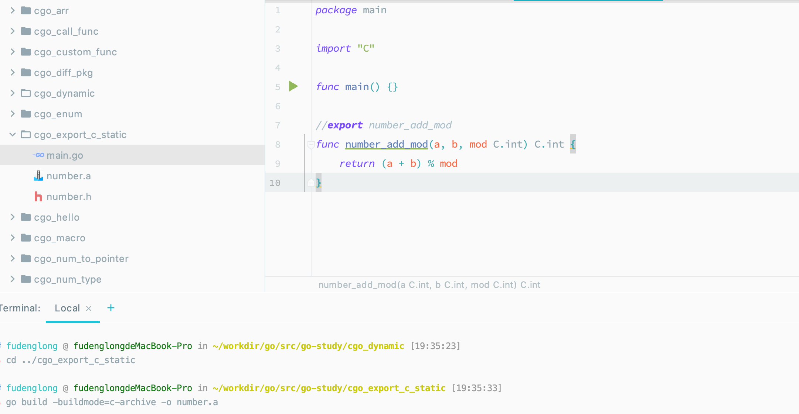
Go 导出 C 动态库
和导出 C 静态库去别不大，只是更改构建模式：
go build -buildmode=c-shared -o number.so